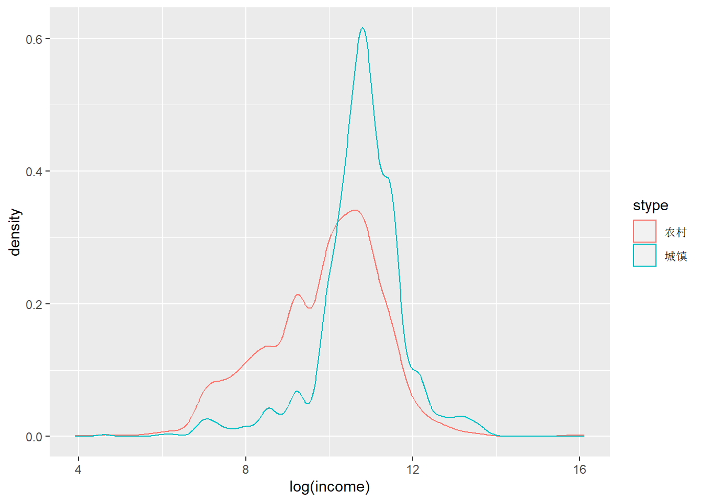
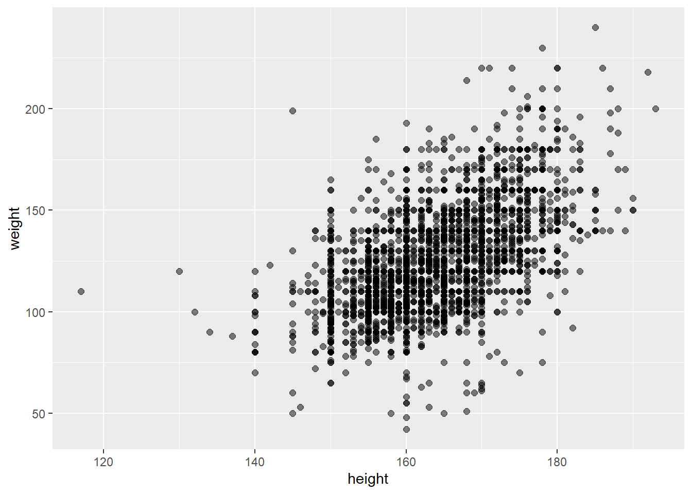
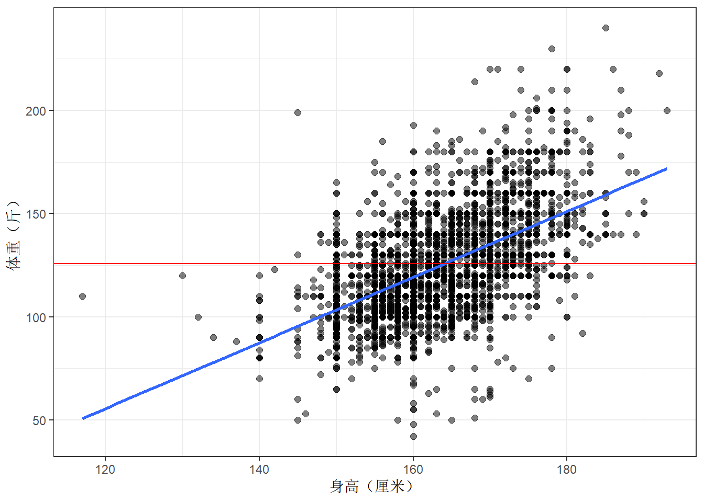
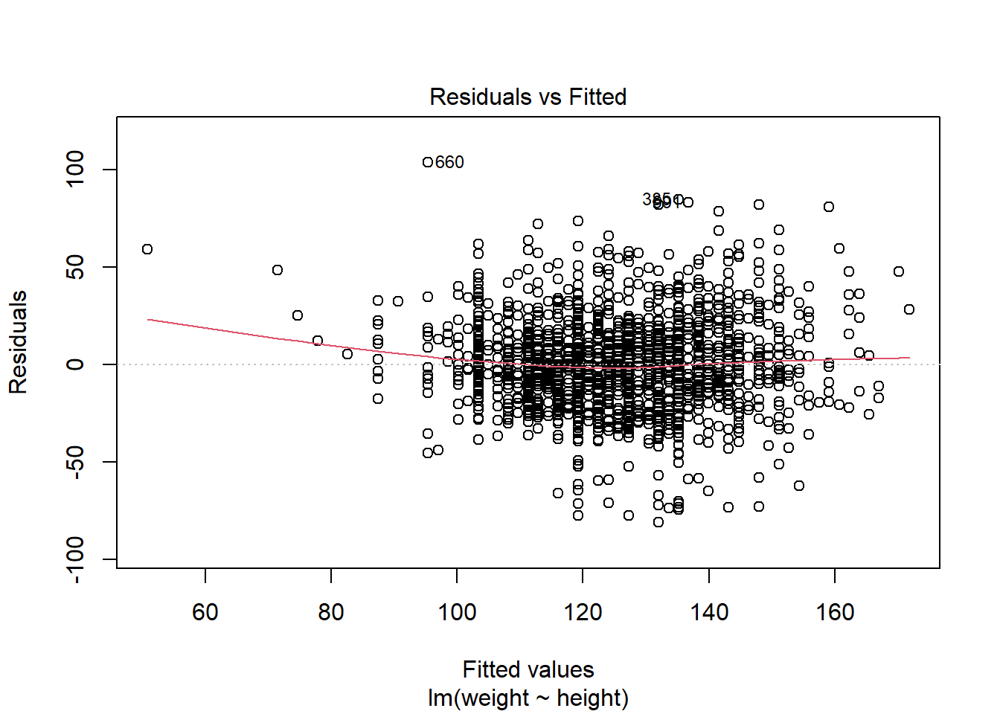
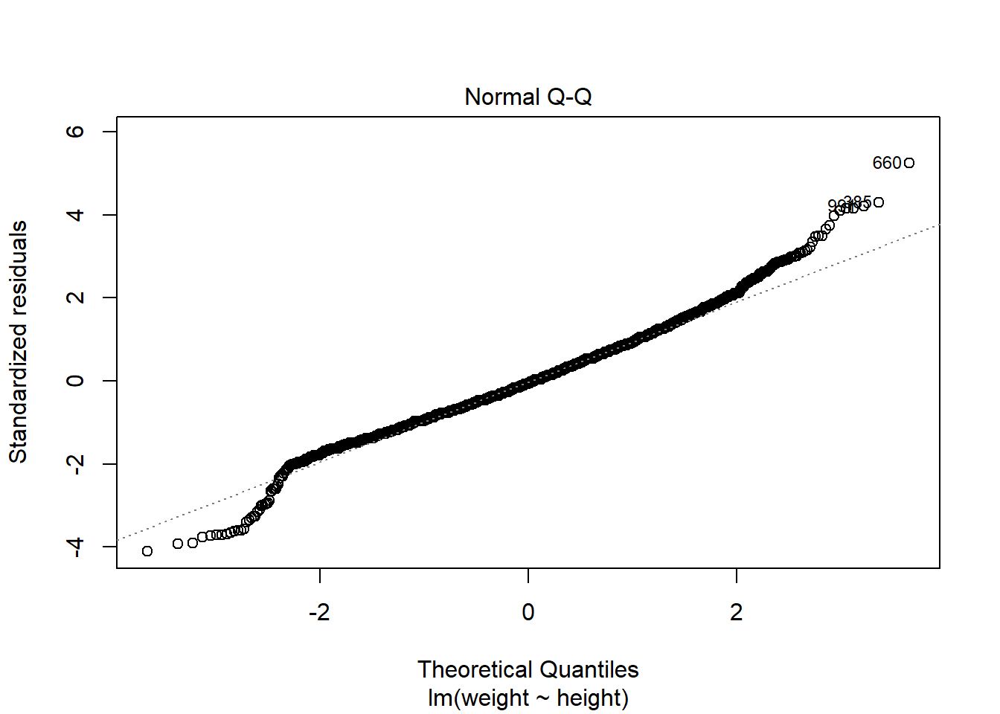
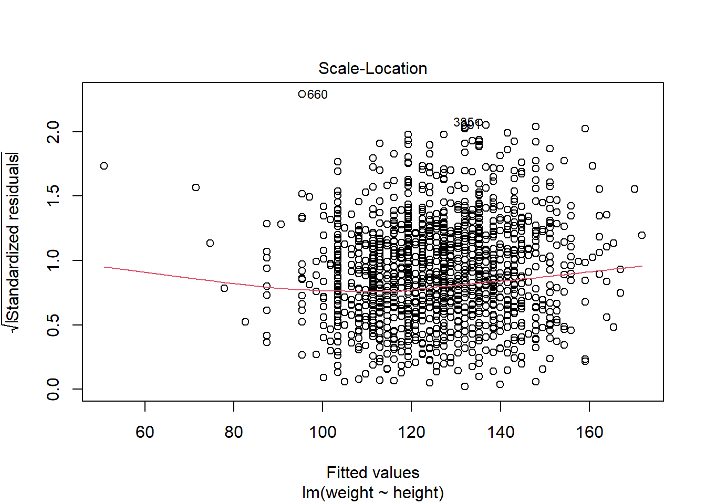
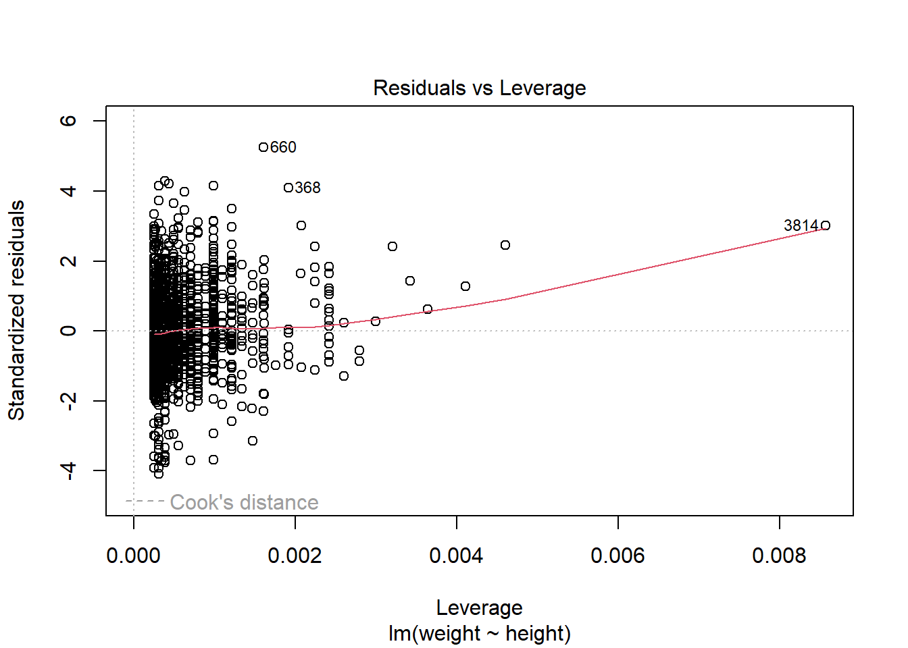
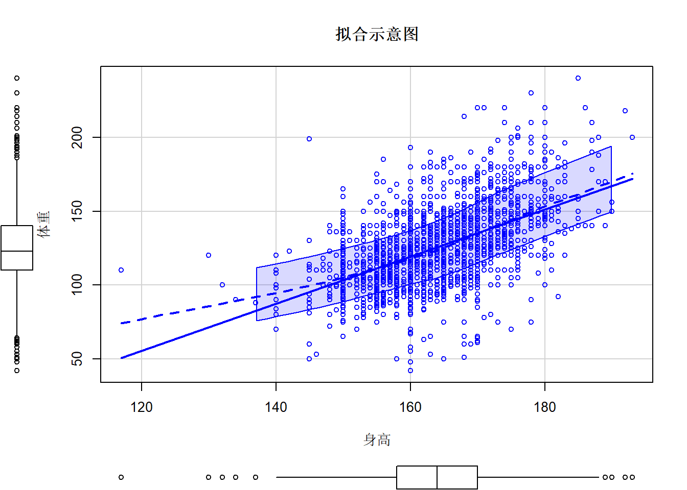
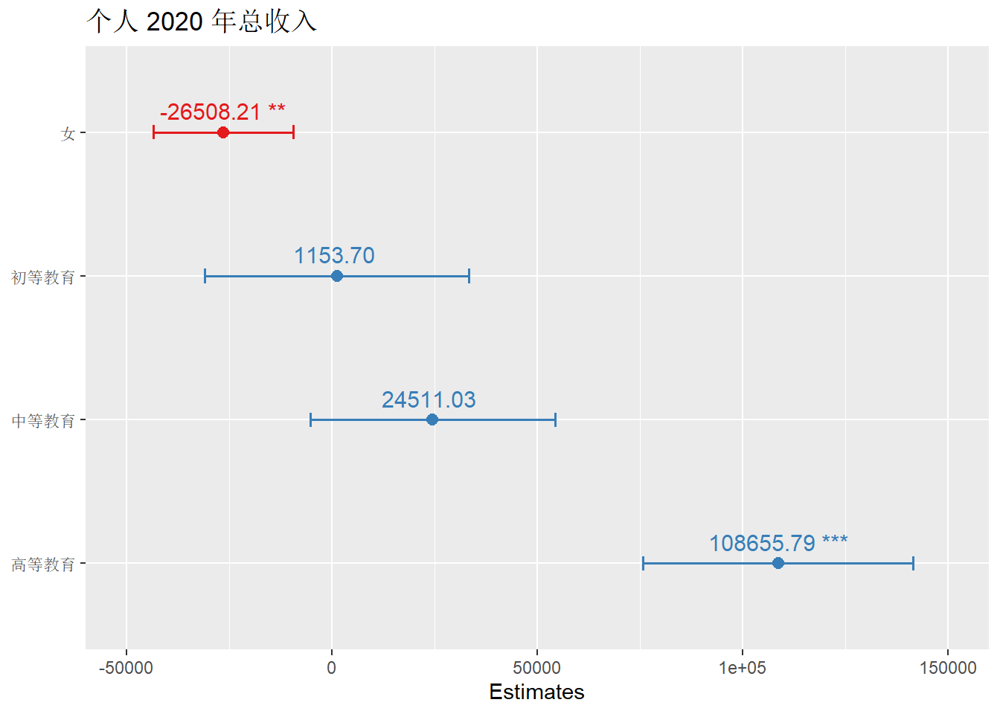
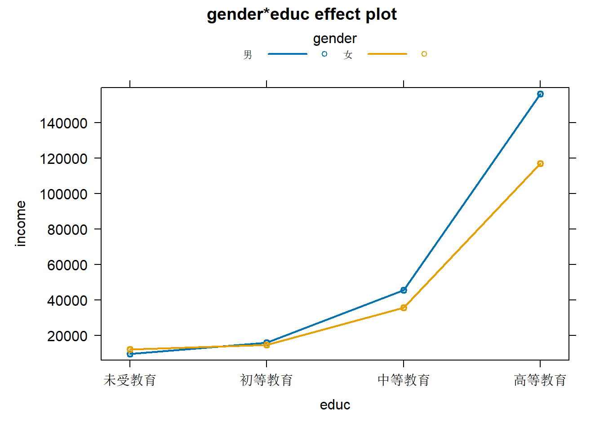

5 线性回归
代码提供： 胡慧怡 何舒欣 李清仪 于芊 黄国政
5.1 简单线性回归介绍
一个简单的线性回归分析只检验X和Y两个变量之间的关系，通常使用一个线性函数对它们的关系进行描述。什么是线性函数？线性函数指自变量X的一个单位变化会导致因变量Y一定数量的增加或减少。
在R中，拟合线性模型最基本的函数就是lm()，格式为：
myfit <- lm(formula, data)
其中，formula指要拟合的模型形式，data是一个数据框，包含了用于拟合模型的数据。
读入CGSS2021核心模块的数据。
load(file = "core.RData")拿到一份数据，需要知道其含义。
core %>% head()## # A tibble: 6 × 12
## stype gender age agegroup height weight educ poli income famincome health
## <fct> <fct> <dbl> <fct> <dbl> <dbl> <fct> <fct> <dbl> <dbl> <fct>
## 1 城镇 女 54 45~60岁 160 118 中等… 群众 96000 200000 很健康
## 2 城镇 女 76 60岁以上 160 120 中等… 共产… 60000 120000 很健康
## 3 农村 男 35 30~45岁 172 130 高等… 群众 160000 220000 比较健…
## 4 城镇 女 63 60岁以上 158 115 中等… 群众 48000 100000 比较健…
## 5 城镇 男 25 30岁以下 180 150 高等… 群众 600000 2000000 比较健…
## 6 农村 男 34 30~45岁 187 198 高等… 群众 100000 200000 一般
## # ℹ 1 more variable: happy <fct>进行回归分析前需要检查缺失值。
core %>%
summarise_all(
~ sum(is.na(.))
)## # A tibble: 1 × 12
## stype gender age agegroup height weight educ poli income famincome health
## <int> <int> <int> <int> <int> <int> <int> <int> <int> <int> <int>
## 1 0 0 0 0 0 0 0 0 0 0 0
## # ℹ 1 more variable: happy <int>导入的core数据我们已经在前面处理过了缺失值，不再赘述。
查看CGSS2021调研中性别与城乡分布情况。
core %>% count(gender,stype)## # A tibble: 4 × 3
## gender stype n
## <fct> <fct> <int>
## 1 男 农村 1373
## 2 男 城镇 523
## 3 女 农村 1523
## 4 女 城镇 582以城乡分组，查看年龄、身高、体重和收入的基本状况。
core %>%
group_by(stype) %>%
summarise(
n = n(),
mean_age = mean(age),
mean_height = mean(height),
mean_weight = mean(weight),
mean_income = mean(income),
mean_famincome = mean(famincome)
)## # A tibble: 2 × 7
## stype n mean_age mean_height mean_weight mean_income mean_famincome
## <fct> <int> <dbl> <dbl> <dbl> <dbl> <dbl>
## 1 农村 2896 53.7 163. 124. 44957. 106865.
## 2 城镇 1105 49.0 166. 129. 65900. 135902.ggplot作图会更加直观
core %>%
ggplot(aes(x = log(income), color = stype)) +
geom_density()## Warning: Removed 624 rows containing non-finite values (`stat_density()`).
5.2 一元线性回归
5.2.1 模型建立
身高的增长会导致体重的增加吗？
建立散点图观察是否存在直观的线性关系。
core %>%
ggplot(aes(x = height, y = weight)) +
geom_point(size = 2,alpha = 0.5)
建立“身高”和“体重”的简单线性回归模型。
mod1 <- lm(formula = weight ~ height, data = core)summary(mod1)##
## Call:
## lm(formula = weight ~ height, data = core)
##
## Residuals:
## Min 1Q Median 3Q Max
## -81.008 -13.305 -1.194 12.288 103.621
##
## Coefficients:
## Estimate Std. Error t value Pr(>|t|)
## (Intercept) -135.54740 6.29093 -21.55 <2e-16 ***
## height 1.59259 0.03831 41.57 <2e-16 ***
## ---
## Signif. codes: 0 '***' 0.001 '**' 0.01 '*' 0.05 '.' 0.1 ' ' 1
##
## Residual standard error: 19.75 on 3999 degrees of freedom
## Multiple R-squared: 0.3017, Adjusted R-squared: 0.3015
## F-statistic: 1728 on 1 and 3999 DF, p-value: < 2.2e-16sd(core$weight)## [1] 23.625715.2.2 模型结果解读
由输出结果可知，-135.54740是方程的截距，1.59259是方程的斜率。我们建立的线性回归模型可以写成：
y = -135.55 + 1.59x
- 对于斜率1.59而言，当一个人的身高是170厘米时，他的预期体重weight = -135.55 + 1.59*170 = 134.75斤。
- 对于截距-135.55而言，当身高为0时，预期的体重为-135.55。但这只是极端的理论设想，在现实中没有解释意义。
对结果进行解释，首先判断模型显著性。由输出结果可知模型P值小于2.2e-16，拒绝原假设，回归模型显著性通过。
接着进行回归模型拟合优度的评估。
Residual standard error（残差的标准差）和R-squared（R方）可以作为评估标准。
R-squared为0.3017，表示回归模型解释了30%的体重变化。由于在社会科学中，R-squared值在0.20-0.30之间已经具有较强的解释力，所以该回归模型与数据的吻合度较高。
Residual standard error与Y值标准差进行比较，前者小于后者时表明拟合的回归模型与实际数据的契合度比较高。该回归模型的残差标准差为19.75，Y值标准差为23.63，说明回归线比Y的算数平均值更加接近实际的Y观测值，因此模型拟合度较好。可以通过添加了拟合线和Y平均值基线的散点图进行观察。
ggplot(core, aes(x = height, y = weight))+
geom_point(size = 2,alpha = 0.5)+
geom_smooth(method = lm, se = FALSE)+
geom_hline(yintercept = mean(core$weight), color = "red")+
theme_bw()+
labs(x = "身高（厘米）", y = "体重（斤）")## `geom_smooth()` using formula = 'y ~ x'
最后检验回归模型中回归系数的显著度。从输出结果中可以看到height变量回归系数约为1.59，其P值为2.2e-16，显著不为0，拒绝原假设，说明身高对体重在统计学上有显著的正向影响，身高每增加1厘米，平均体重将预期增加约1.59斤。
confint函数可以输出模型的置信区间，置信水平默认为95%。
confint(mod1)## 2.5 % 97.5 %
## (Intercept) -147.881126 -123.213674
## height 1.517476 1.667712根据输出结果，我们可以解释为身高每增长1厘米，体重平均增加1.51~1.66斤。这里的置信区间没有包含0，证实了回归系数和0显著不同，即身高对体重存在显著影响。这一种方法与P值得到的结果是一致的。
在前面的介绍中，我们建立了回归模型，并可以籍此手工计算获取拟合值（即通过不同身高预测对应的平均体重）和残差，以下代码可以直接获取拟合值和残差。
head(core) %>% modelr::add_predictions(mod1) %>% modelr::add_residuals(mod1)## # A tibble: 6 × 14
## stype gender age agegroup height weight educ poli income famincome health
## <fct> <fct> <dbl> <fct> <dbl> <dbl> <fct> <fct> <dbl> <dbl> <fct>
## 1 城镇 女 54 45~60岁 160 118 中等… 群众 96000 200000 很健康
## 2 城镇 女 76 60岁以上 160 120 中等… 共产… 60000 120000 很健康
## 3 农村 男 35 30~45岁 172 130 高等… 群众 160000 220000 比较健…
## 4 城镇 女 63 60岁以上 158 115 中等… 群众 48000 100000 比较健…
## 5 城镇 男 25 30岁以下 180 150 高等… 群众 600000 2000000 比较健…
## 6 农村 男 34 30~45岁 187 198 高等… 群众 100000 200000 一般
## # ℹ 3 more variables: happy <fct>, pred <dbl>, resid <dbl>由散点图可以看出正相关趋势明显，符合回归模型与回归系数的显著性，但图像中明显存在着异常值。完成回归模型与回归系数显著性的检验后，还要进行残差分析（预测值和实际值之间的差，残差服从正态分布时为最佳。
5.2.3 残差分析
plot()函数可生成4种用于模型诊断的图形，以进行直观的分析。
plot(mod1)
第一幅图是残差对预测值散点图，散点应当在0线上下波动，若有曲线模式、分散程度增大模式、特别突出的离群点存在，则说明有异常。
第二幅图是残差的正态QQ图，当散点接近直线的时候可以认为模型的残差服从正态分布。
第三幅图误差大小（标准化残差绝对值的平方根）对拟合值的图形，可以判断方差齐性假设。
第四幅图是残差对杠杠量图，并添加了Cook距离等值线。杠杆量代表回归自变量对结果的影响大小。
由第一、第三副图，842、1146、2151、6861可能存在异常。
可以使用[]和要选择的行的索引来实现从数据框中提取观测样本（行）的目的。[]左侧数字表示观测的样本数（行数），右侧数字表示变量数（列数）。如果将逗号前或后的空格留空，则将分别选择所有的行或列。
core[660,]## # A tibble: 1 × 12
## stype gender age agegroup height weight educ poli income famincome health
## <fct> <fct> <dbl> <fct> <dbl> <dbl> <fct> <fct> <dbl> <dbl> <fct>
## 1 农村 女 59 45~60岁 145 199 未受… 群众 8000 10000 一般
## # ℹ 1 more variable: happy <fct>core[3814,]## # A tibble: 1 × 12
## stype gender age agegroup height weight educ poli income famincome health
## <fct> <fct> <dbl> <fct> <dbl> <dbl> <fct> <fct> <dbl> <dbl> <fct>
## 1 农村 男 75 60岁以上 117 110 初等… 群众 0 3000 很不健…
## # ℹ 1 more variable: happy <fct>core[368,]## # A tibble: 1 × 12
## stype gender age agegroup height weight educ poli income famincome health
## <fct> <fct> <dbl> <fct> <dbl> <dbl> <fct> <fct> <dbl> <dbl> <fct>
## 1 城镇 男 31 30~45岁 185 240 高等… 群众 300000 480000 比较健…
## # ℹ 1 more variable: happy <fct>660和3814的身高与体重显然异于常人，不符合现实状况。面对这些异常值，我们可以进行解释，也可以进行删除或置之不理。
5.2.4 其他线性模型
R语言每一个模型通常不只一个模型。实现回归的选择很多，下面选择一些个性化的包介绍。
5.2.4.1 jmv包
jmv包常用于统计分析，如描述，t检验，方差分析，相关矩阵，比例检验，应急表和因子分析。通过以下的实例来说明它的用法以及结果，数据集与解决目标同上。
#install.packages("jmv")
library(jmv)linReg(data = core, dep = 'weight',covs = 'height',blocks = list(list('height')))##
## LINEAR REGRESSION
##
## Model Fit Measures
## ───────────────────────────────────
## Model R R²
## ───────────────────────────────────
## 1 0.5492710 0.3016987
## ───────────────────────────────────
##
##
## MODEL SPECIFIC RESULTS
##
## MODEL 1
##
## Model Coefficients - weight
## ─────────────────────────────────────────────────────────────────────
## Predictor Estimate SE t p
## ─────────────────────────────────────────────────────────────────────
## Intercept -135.547400 6.29092827 -21.54649 < .0000001
## height 1.592594 0.03831458 41.56626 < .0000001
## ─────────────────────────────────────────────────────────────────────5.2.4.2 zelig包
该包是社会科学领域鼎鼎大名的哈佛大学Gary King团队出品。在https://zeligproject.org/上有更详细的介绍。
#install.packages("zeligverse") 如果这个命令无法下载，使用下面的命令，二选一。
#devtools::install_github('IQSS/Zelig')
library(Zelig)## Loading required package: survival##
## Attaching package: 'Zelig'## The following object is masked from 'package:purrr':
##
## reduce## The following object is masked from 'package:ggplot2':
##
## stat选择model为ls即为简单的线性回归.
zelig_mod <- zelig(weight ~ height, model = "ls", data = core)## Warning: `tbl_df()` was deprecated in dplyr 1.0.0.
## ℹ Please use `tibble::as_tibble()` instead.
## ℹ The deprecated feature was likely used in the Zelig package.
## Please report the issue at <https://github.com/IQSS/Zelig/issues>.
## This warning is displayed once every 8 hours.
## Call `lifecycle::last_lifecycle_warnings()` to see where this warning was
## generated.## Warning: `group_by_()` was deprecated in dplyr 0.7.0.
## ℹ Please use `group_by()` instead.
## ℹ See vignette('programming') for more help
## ℹ The deprecated feature was likely used in the Zelig package.
## Please report the issue at <https://github.com/IQSS/Zelig/issues>.
## This warning is displayed once every 8 hours.
## Call `lifecycle::last_lifecycle_warnings()` to see where this warning was
## generated.## How to cite this model in Zelig:
## R Core Team. 2007.
## ls: Least Squares Regression for Continuous Dependent Variables
## in Christine Choirat, Christopher Gandrud, James Honaker, Kosuke Imai, Gary King, and Olivia Lau,
## "Zelig: Everyone's Statistical Software," https://zeligproject.org/summary(zelig_mod)## Model:
##
## Call:
## z5$zelig(formula = weight ~ height, data = core)
##
## Residuals:
## Min 1Q Median 3Q Max
## -81.008 -13.305 -1.194 12.288 103.621
##
## Coefficients:
## Estimate Std. Error t value Pr(>|t|)
## (Intercept) -135.54740 6.29093 -21.55 <2e-16
## height 1.59259 0.03831 41.57 <2e-16
##
## Residual standard error: 19.75 on 3999 degrees of freedom
## Multiple R-squared: 0.3017, Adjusted R-squared: 0.3015
## F-statistic: 1728 on 1 and 3999 DF, p-value: < 2.2e-16
##
## Next step: Use 'setx' method5.2.5 高阶拟合
在一元回归分析中，如果依变量y与自变量x的关系为非线性的（例如年龄和收入），但是又找不到适当的函数曲线来拟合，则可以采用一元多项式回归。多项式回归的最大优点就是可以通过增加x的高次项对实测点进行逼近，直至满意为止。事实上，多项式回归可以处理相当一类非线性问题，它在回归分析中占有重要的地位，因为任一函数都可以分段用多项式来逼近。因此，在通常的实际问题中，不论因变量与其他自变量的关系如何，我们总可以用多项式回归来进行分析。一般从图形当中我们也能看出应用高次项逼近的相关提示。以下通过一个实例来演示怎么样在R中操作多项式回归。
变量为国民的身高和体重。在上述的简单线性回归分析结果当中看出，我们可能要添加一个高次项来提高回归的精确程度，因此我们加入了一个二次项进入回归方程当中进行再次拟合。
多项式回归
mod2 <- lm(weight~height+I(height^2),data=core)summary(mod2)##
## Call:
## lm(formula = weight ~ height + I(height^2), data = core)
##
## Residuals:
## Min 1Q Median 3Q Max
## -79.937 -13.224 -0.937 11.802 97.370
##
## Coefficients:
## Estimate Std. Error t value Pr(>|t|)
## (Intercept) 428.249286 84.174701 5.088 3.79e-07 ***
## height -5.296499 1.026402 -5.160 2.59e-07 ***
## I(height^2) 0.020993 0.003126 6.717 2.12e-11 ***
## ---
## Signif. codes: 0 '***' 0.001 '**' 0.01 '*' 0.05 '.' 0.1 ' ' 1
##
## Residual standard error: 19.64 on 3998 degrees of freedom
## Multiple R-squared: 0.3095, Adjusted R-squared: 0.3091
## F-statistic: 896 on 2 and 3998 DF, p-value: < 2.2e-16由输出结果可以得出新的回归方程：
weight = 428.25-5.30*height+0.02*height^2
在拟合含二次项的等式里面，添加了一个身高的平方项。在p<0.001水平下，回归系数都是显著的。模型的方差解释率增加到了30.65%。如果你愿意，可以拟合更多的多项式。如拟合三次多项式，可用：
mod3 <- lm(weight ~ height + I(height^2) +I(height^3), data=core)
社会科学的实践中很少拟合高阶曲线，仅供满足好奇心。
接下来，我们用car包中的scatterplot函数加拟合线完成上述过程的可视化
library(car)## Loading required package: carData##
## Attaching package: 'car'## The following object is masked from 'package:dplyr':
##
## recode## The following object is masked from 'package:purrr':
##
## somescatterplot(weight~height,data=core,spread=FALSE,lty.smooth=2, smoother=gamLine,main="拟合示意图",xlab="身高",ylab="体重") ## Warning in plot.window(...): "spread" is not a graphical parameter## Warning in plot.window(...): "lty.smooth" is not a graphical parameter## Warning in plot.window(...): "smoother" is not a graphical parameter## Warning in plot.xy(xy, type, ...): "spread" is not a graphical parameter## Warning in plot.xy(xy, type, ...): "lty.smooth" is not a graphical parameter## Warning in plot.xy(xy, type, ...): "smoother" is not a graphical parameter## Warning in axis(side = side, at = at, labels = labels, ...): "spread" is not a
## graphical parameter## Warning in axis(side = side, at = at, labels = labels, ...): "lty.smooth" is
## not a graphical parameter## Warning in axis(side = side, at = at, labels = labels, ...): "smoother" is not
## a graphical parameter## Warning in axis(side = side, at = at, labels = labels, ...): "spread" is not a
## graphical parameter## Warning in axis(side = side, at = at, labels = labels, ...): "lty.smooth" is
## not a graphical parameter## Warning in axis(side = side, at = at, labels = labels, ...): "smoother" is not
## a graphical parameter## Warning in box(...): "spread" is not a graphical parameter## Warning in box(...): "lty.smooth" is not a graphical parameter## Warning in box(...): "smoother" is not a graphical parameter## Warning in title(...): "spread" is not a graphical parameter## Warning in title(...): "lty.smooth" is not a graphical parameter## Warning in title(...): "smoother" is not a graphical parameter
5.3 多元线性回归
在社会科学的研究中，影响因变量的因素不不可能是单一的。因此，实际的定量研究成果中，我们一般会使用多元回归模型。
### 多元线性回归模型拟合 {#OLS-multiplrfit}
多元线性回归的一般形式如下
mulmod1 <- lm(y ~ x1 + x2 + x3 + x4 + ….xk, data = core)
我们根据CGSS2021建立的core数据库里包含了收入、性别、教育等变量，以下分析中，我们想着重探究的问题是：性别和教育水平对收入的影响。
首先我们建立一个收入、性别和教育三个变量的多元线性回归模型。
拟合多元回归模型
mulmod1 <- lm(income ~ gender + educ, core)输出模型结果
summary(mulmod1)##
## Call:
## lm(formula = income ~ gender + educ, data = core)
##
## Residuals:
## Min 1Q Median 3Q Max
## -140022 -30877 -9369 6631 9854123
##
## Coefficients:
## Estimate Std. Error t value Pr(>|t|)
## (Intercept) 31366 15170 2.068 0.03873 *
## gender女 -26508 8678 -3.055 0.00227 **
## educ初等教育 1154 16435 0.070 0.94404
## educ中等教育 24511 15179 1.615 0.10644
## educ高等教育 108656 16813 6.462 1.15e-10 ***
## ---
## Signif. codes: 0 '***' 0.001 '**' 0.01 '*' 0.05 '.' 0.1 ' ' 1
##
## Residual standard error: 270100 on 3996 degrees of freedom
## Multiple R-squared: 0.02278, Adjusted R-squared: 0.0218
## F-statistic: 23.29 on 4 and 3996 DF, p-value: < 2.2e-16由输出的模型结果可以看出，模型的P值小于0.05，Adjustted R-squared为0.022，可以解释收入2.2%%的变异量。自变量女性和高等教育的P值均小于0.05，两个自变量对收入的影响都是显著的，进而可以做出如下解读：
- 在同一教育水平下，女性与男性（对照组，方程中未显示）相比，其期望平均收入比男性低26508元。
- 在同一性别中，高等教育与未受教育（对照组，方程中未显示）相比，其期望平均收入比未受教育高108656元。
引人深思的是，初等教育和中等教育的平均期望收入水平都未有显著高于未受教育。数据告诉我们，文化资本对于个人而言仍然十分重要。
模型结果可视化
#install.packages("sjPlot")
library(sjPlot)
plot_model(mulmod1,show.values = TRUE, width = 0.1)
tab_model(mulmod1,
show.reflvl = T,
show.intercept = T,
p.style = "numeric_stars")| 个人2020年总收入 | |||
|---|---|---|---|
| Predictors | Estimates | CI | p |
| (Intercept) | 31366.07 * | 1625.22 – 61106.92 | 0.039 |
| 男 | Reference | ||
| 女 | -26508.21 ** | -43521.56 – -9494.85 | 0.002 |
| 未受教育 | Reference | ||
| 初等教育 | 1153.70 | -31068.53 – 33375.94 | 0.944 |
| 中等教育 | 24511.03 | -5248.94 – 54271.00 | 0.106 |
| 高等教育 | 108655.79 *** | 75692.22 – 141619.36 | <0.001 |
| 其他 | Reference | ||
| Observations | 4001 | ||
| R2 / R2 adjusted | 0.023 / 0.022 | ||
|
|||
5.3.1 模型汇总
下文我们将给出带交互效应的多元线性回归模型，并将其结果以学术论文中的标准表格呈现。如果两个预测变量的交互项显著，说明因变量(Y)与其中一个预测变量的关系与另外一个预测变量的值存在一定的相关性。说起来有点晦涩，我们看一个实例的可视化结果便可以清楚的理解。
如下简单代码生成以下五个回归模型，并将结果依次存为mulmod2至mulmod6。
mulmod2 <- lm(income ~ gender, core)
mulmod3 <- lm(income ~ educ, core)
mulmod4 <- lm(income ~ gender + educ, core)
mulmod5 <- lm(income ~ gender + educ + poli + height + weight + stype, core)
mulmod6 <- lm(income ~ gender + educ + poli + height + weight + stype + gender:educ, core)作为案例，mulmod5中加入了除性别和教育外的更多预测变量。mulmod6中加入了交互项educ:sex。
利用stargazer包，一行简单的代码就可以输出上述五个模型的汇总，稍加修改就能应用在我们的研究成果中。如下：
library(stargazer)##
## Please cite as:## Hlavac, Marek (2022). stargazer: Well-Formatted Regression and Summary Statistics Tables.## R package version 5.2.3. https://CRAN.R-project.org/package=stargazerstargazer(mulmod2,mulmod3,mulmod4,mulmod5,mulmod6,type="html",out="result.html")##
## <table style="text-align:center"><tr><td colspan="6" style="border-bottom: 1px solid black"></td></tr><tr><td style="text-align:left"></td><td colspan="5"><em>Dependent variable:</em></td></tr>
## <tr><td></td><td colspan="5" style="border-bottom: 1px solid black"></td></tr>
## <tr><td style="text-align:left"></td><td colspan="5">income</td></tr>
## <tr><td style="text-align:left"></td><td>(1)</td><td>(2)</td><td>(3)</td><td>(4)</td><td>(5)</td></tr>
## <tr><td colspan="6" style="border-bottom: 1px solid black"></td></tr><tr><td style="text-align:left">gender女</td><td>-28,546.870<sup>***</sup></td><td></td><td>-26,508.210<sup>***</sup></td><td>-11,841.320</td><td>2,392.594</td></tr>
## <tr><td style="text-align:left"></td><td>(8,636.321)</td><td></td><td>(8,677.813)</td><td>(11,143.950)</td><td>(32,886.990)</td></tr>
## <tr><td style="text-align:left"></td><td></td><td></td><td></td><td></td><td></td></tr>
## <tr><td style="text-align:left">educ初等教育</td><td></td><td>7,483.266</td><td>1,153.703</td><td>551.843</td><td>6,225.012</td></tr>
## <tr><td style="text-align:left"></td><td></td><td>(16,321.080)</td><td>(16,435.240)</td><td>(16,416.530)</td><td>(31,135.740)</td></tr>
## <tr><td style="text-align:left"></td><td></td><td></td><td></td><td></td><td></td></tr>
## <tr><td style="text-align:left">educ中等教育</td><td></td><td>32,361.900<sup>**</sup></td><td>24,511.030</td><td>25,297.060</td><td>35,947.240</td></tr>
## <tr><td style="text-align:left"></td><td></td><td>(14,975.760)</td><td>(15,179.340)</td><td>(15,471.950)</td><td>(29,724.500)</td></tr>
## <tr><td style="text-align:left"></td><td></td><td></td><td></td><td></td><td></td></tr>
## <tr><td style="text-align:left">educ高等教育</td><td></td><td>114,928.700<sup>***</sup></td><td>108,655.800<sup>***</sup></td><td>120,493.000<sup>***</sup></td><td>146,423.200<sup>***</sup></td></tr>
## <tr><td style="text-align:left"></td><td></td><td>(16,704.870)</td><td>(16,813.360)</td><td>(18,574.380)</td><td>(32,660.570)</td></tr>
## <tr><td style="text-align:left"></td><td></td><td></td><td></td><td></td><td></td></tr>
## <tr><td style="text-align:left">poli共青团员</td><td></td><td></td><td></td><td>-68,172.010<sup>***</sup></td><td>-66,941.880<sup>***</sup></td></tr>
## <tr><td style="text-align:left"></td><td></td><td></td><td></td><td>(20,727.510)</td><td>(20,743.610)</td></tr>
## <tr><td style="text-align:left"></td><td></td><td></td><td></td><td></td><td></td></tr>
## <tr><td style="text-align:left">poli民主党派</td><td></td><td></td><td></td><td>4,716.027</td><td>138.283</td></tr>
## <tr><td style="text-align:left"></td><td></td><td></td><td></td><td>(155,985.600)</td><td>(156,025.100)</td></tr>
## <tr><td style="text-align:left"></td><td></td><td></td><td></td><td></td><td></td></tr>
## <tr><td style="text-align:left">poli共产党员</td><td></td><td></td><td></td><td>3,758.095</td><td>3,851.167</td></tr>
## <tr><td style="text-align:left"></td><td></td><td></td><td></td><td>(13,037.970)</td><td>(13,048.430)</td></tr>
## <tr><td style="text-align:left"></td><td></td><td></td><td></td><td></td><td></td></tr>
## <tr><td style="text-align:left">height</td><td></td><td></td><td></td><td>514.123</td><td>487.213</td></tr>
## <tr><td style="text-align:left"></td><td></td><td></td><td></td><td>(772.098)</td><td>(772.538)</td></tr>
## <tr><td style="text-align:left"></td><td></td><td></td><td></td><td></td><td></td></tr>
## <tr><td style="text-align:left">weight</td><td></td><td></td><td></td><td>430.972<sup>**</sup></td><td>384.912<sup>*</sup></td></tr>
## <tr><td style="text-align:left"></td><td></td><td></td><td></td><td>(218.816)</td><td>(220.799)</td></tr>
## <tr><td style="text-align:left"></td><td></td><td></td><td></td><td></td><td></td></tr>
## <tr><td style="text-align:left">stype城镇</td><td></td><td></td><td></td><td>-11,557.800</td><td>-11,541.820</td></tr>
## <tr><td style="text-align:left"></td><td></td><td></td><td></td><td>(10,251.890)</td><td>(10,252.840)</td></tr>
## <tr><td style="text-align:left"></td><td></td><td></td><td></td><td></td><td></td></tr>
## <tr><td style="text-align:left">gender女:educ初等教育</td><td></td><td></td><td></td><td></td><td>-3,632.507</td></tr>
## <tr><td style="text-align:left"></td><td></td><td></td><td></td><td></td><td>(36,896.280)</td></tr>
## <tr><td style="text-align:left"></td><td></td><td></td><td></td><td></td><td></td></tr>
## <tr><td style="text-align:left">gender女:educ中等教育</td><td></td><td></td><td></td><td></td><td>-12,399.900</td></tr>
## <tr><td style="text-align:left"></td><td></td><td></td><td></td><td></td><td>(34,554.990)</td></tr>
## <tr><td style="text-align:left"></td><td></td><td></td><td></td><td></td><td></td></tr>
## <tr><td style="text-align:left">gender女:educ高等教育</td><td></td><td></td><td></td><td></td><td>-41,606.860</td></tr>
## <tr><td style="text-align:left"></td><td></td><td></td><td></td><td></td><td>(37,757.500)</td></tr>
## <tr><td style="text-align:left"></td><td></td><td></td><td></td><td></td><td></td></tr>
## <tr><td style="text-align:left">Constant</td><td>65,759.920<sup>***</sup></td><td>10,995.890</td><td>31,366.070<sup>**</sup></td><td>-111,139.800</td><td>-112,398.500</td></tr>
## <tr><td style="text-align:left"></td><td>(6,264.271)</td><td>(13,639.470)</td><td>(15,169.580)</td><td>(120,224.800)</td><td>(122,574.300)</td></tr>
## <tr><td style="text-align:left"></td><td></td><td></td><td></td><td></td><td></td></tr>
## <tr><td colspan="6" style="border-bottom: 1px solid black"></td></tr><tr><td style="text-align:left">Observations</td><td>4,001</td><td>4,001</td><td>4,001</td><td>4,001</td><td>4,001</td></tr>
## <tr><td style="text-align:left">R<sup>2</sup></td><td>0.003</td><td>0.020</td><td>0.023</td><td>0.028</td><td>0.028</td></tr>
## <tr><td style="text-align:left">Adjusted R<sup>2</sup></td><td>0.002</td><td>0.020</td><td>0.022</td><td>0.025</td><td>0.025</td></tr>
## <tr><td style="text-align:left">Residual Std. Error</td><td>272,765.700 (df = 3999)</td><td>270,391.900 (df = 3997)</td><td>270,110.600 (df = 3996)</td><td>269,656.500 (df = 3990)</td><td>269,673.400 (df = 3987)</td></tr>
## <tr><td style="text-align:left">F Statistic</td><td>10.926<sup>***</sup> (df = 1; 3999)</td><td>27.880<sup>***</sup> (df = 3; 3997)</td><td>23.287<sup>***</sup> (df = 4; 3996)</td><td>11.293<sup>***</sup> (df = 10; 3990)</td><td>8.878<sup>***</sup> (df = 13; 3987)</td></tr>
## <tr><td colspan="6" style="border-bottom: 1px solid black"></td></tr><tr><td style="text-align:left"><em>Note:</em></td><td colspan="5" style="text-align:right"><sup>*</sup>p<0.1; <sup>**</sup>p<0.05; <sup>***</sup>p<0.01</td></tr>
## </table>5.3.2 交互模型效应
用sjPlot的sjt.lm函数可以方便的输出单个模型的参数。如下：
library(sjPlot)
tab_model(mulmod6,
show.reflvl = T,
show.intercept = T,
p.style = "numeric_stars"
)| 个人2020年总收入 | |||
|---|---|---|---|
| Predictors | Estimates | CI | p |
| (Intercept) | -112398.55 | -352712.67 – 127915.58 | 0.359 |
| 身高（厘米） | 487.21 | -1027.39 – 2001.82 | 0.528 |
| 体重（斤） | 384.91 | -47.98 – 817.80 | 0.081 |
| 男 | Reference | ||
| 女 | 2392.59 | -62084.29 – 66869.48 | 0.942 |
| 未受教育 | Reference | ||
| 初等教育 | 6225.01 | -54818.44 – 67268.47 | 0.842 |
| 中等教育 | 35947.24 | -22329.39 – 94223.87 | 0.227 |
| gender女:educ初等教育 | -3632.51 | -75969.84 – 68704.83 | 0.922 |
| gender女:educ高等教育 | -41606.86 | -115632.68 – 32418.96 | 0.271 |
| gender女:educ中等教育 | -12399.90 | -80147.01 – 55347.21 | 0.720 |
| 高等教育 | 146423.24 *** | 82390.27 – 210456.22 | <0.001 |
| 其他 | Reference | ||
| 群众 | Reference | ||
| 共青团员 | -66941.89 ** | -107610.96 – -26272.81 | 0.001 |
| 民主党派 | 138.28 | -305758.12 – 306034.69 | 0.999 |
| 共产党员 | 3851.17 | -21731.05 – 29433.39 | 0.768 |
| 不知道 | Reference | ||
| 拒绝回答 | Reference | ||
| 农村 | Reference | ||
| 城镇 | -11541.82 | -31643.12 – 8559.48 | 0.260 |
| Observations | 4001 | ||
| R2 / R2 adjusted | 0.028 / 0.025 | ||
|
|||
library(effects)## lattice theme set by effectsTheme()
## See ?effectsTheme for details.plot(effect("gender:educ",mulmod6,xlevels=list(gender=c(0,1))),multiline=TRUE)
稳健性检验包
#install.packages("robust")
library(robust)## Loading required package: fit.modelsmulmod1_small <- lmRob(income ~ gender + educ, data = core)
mulmod1_full <- lmRob(income ~ . , data = core)
anova(mulmod1_full)##
## Terms added sequentially (first to last)
##
## Chisq Df RobustF Pr(F)
## (Intercept) 1
## stype 1 343.32 < 2.2e-16 ***
## gender 1 100.46 < 2.2e-16 ***
## age 1 72.56 < 2.2e-16 ***
## agegroup 3 173.67 < 2.2e-16 ***
## height 1 35.06 1.603e-09 ***
## weight 1 4.43 0.031954 *
## educ 3 383.71 < 2.2e-16 ***
## poli 3 129.21 < 2.2e-16 ***
## famincome 1 751.83 < 2.2e-16 ***
## health 4 18.51 1.161e-05 ***
## happy 4 6.60 0.008868 **
## ---
## Signif. codes: 0 '***' 0.001 '**' 0.01 '*' 0.05 '.' 0.1 ' ' 1anova(mulmod1_full, mulmod1_small)##
## Response: income
## Terms Df RobustF Pr(F)
## [1,] 2 1
## [2,] 1 1 19 78.728 9.258e-10 ***
## ---
## Signif. codes: 0 '***' 0.001 '**' 0.01 '*' 0.05 '.' 0.1 ' ' 1